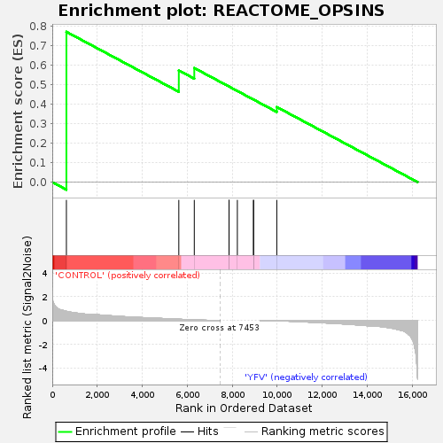
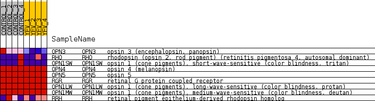
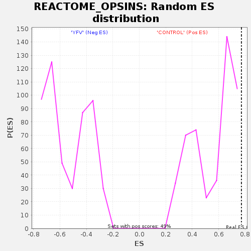

| Dataset | MATRIZ_GSE99081_collapsed_to_symbols.gsea_CLASE_99081.cls#CONTROL_versus_YFV |
| Phenotype | gsea_CLASE_99081.cls#CONTROL_versus_YFV |
| Upregulated in class | CONTROL |
| GeneSet | REACTOME_OPSINS |
| Enrichment Score (ES) | 0.77155954 |
| Normalized Enrichment Score (NES) | 1.3789933 |
| Nominal p-value | 0.026748972 |
| FDR q-value | 1.0 |
| FWER p-Value | 1.0 |

| SYMBOL | TITLE | RANK IN GENE LIST | RANK METRIC SCORE | RUNNING ES | CORE ENRICHMENT | |
|---|---|---|---|---|---|---|
| 1 | OPN3 | opsin 3 (encephalopsin, panopsin) | 628 | 0.770 | 0.7716 | Yes |
| 2 | RHO | rhodopsin (opsin 2, rod pigment) (retinitis pigmentosa 4, autosomal dominant) | 5624 | 0.104 | 0.5734 | No |
| 3 | OPN1SW | opsin 1 (cone pigments), short-wave-sensitive (color blindness, tritan) | 6312 | 0.052 | 0.5857 | No |
| 4 | OPN4 | opsin 4 (melanopsin) | 7856 | 0.000 | 0.4906 | No |
| 5 | OPN5 | opsin 5 | 7857 | 0.000 | 0.4906 | No |
| 6 | RGR | retinal G protein coupled receptor | 8226 | 0.000 | 0.4679 | No |
| 7 | OPN1LW | opsin 1 (cone pigments), long-wave-sensitive (color blindness, protan) | 8944 | 0.000 | 0.4238 | No |
| 8 | OPN1MW | opsin 1 (cone pigments), medium-wave-sensitive (color blindness, deutan) | 8945 | 0.000 | 0.4238 | No |
| 9 | RRH | retinal pigment epithelium-derived rhodopsin homolog | 9979 | -0.024 | 0.3857 | No |

